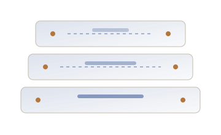
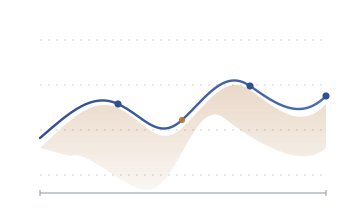
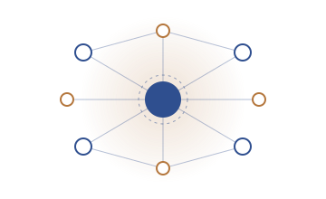

Hybrid modelling
Combining mechanistic models with statistical or learned components so that physics constrains the data and data corrects the physics.
Grey-box models
System identification
Research programme
Themes, projects and methods. All titles and figures on this page are placeholders demonstrating structure and typography.
Themes
Cards use a cursor-following highlight and a soft lift on hover — pure CSS transitions plus a few lines of vanilla JavaScript.
Combining mechanistic models with statistical or learned components so that physics constrains the data and data corrects the physics.
Quantifying what a model does not know, and communicating that honestly to the people relying on its output.
Processing noisy measurements from real instrumentation, from feature design through to online monitoring.
Publishing methods as maintained, documented code so results can be reproduced and extended by others.
Projects
Three project cards with abstract SVG figures — replace with diagrams, screenshots or plots from your own work.

A framework that blends physics-based degradation models with data-driven residuals, tested on placeholder industrial data. Replace with an honest two-sentence summary and the actual partners involved.

Calibrated prediction intervals for streaming sensor data, with an emphasis on graceful degradation when instrument behaviour drifts.

Small, well-tested libraries designed to be read by students as readily as they are used in research, with documentation as a first-class output.
Methods
A short, honest description of method beats a long list of buzzwords. These entries are placeholders for that description.
Every result should be reproducible by someone who is sceptical and in a hurry.
Placeholder working principle| Stage | Typical tools |
|---|---|
| Analysis | Python, NumPy, SciPy, pandas |
| Modelling | PyTorch, scikit-learn, custom solvers |
| Simulation | Finite element & ODE toolchains |
| Reproducibility | Git, containers, automated tests |
| Communication | LaTeX, notebooks, static web output |